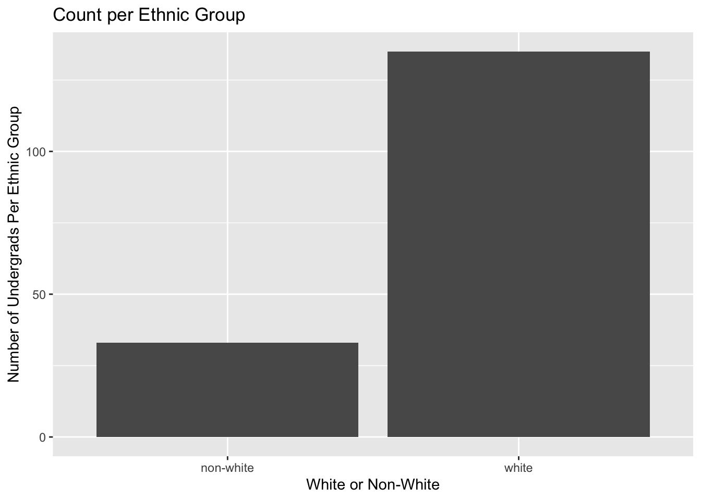
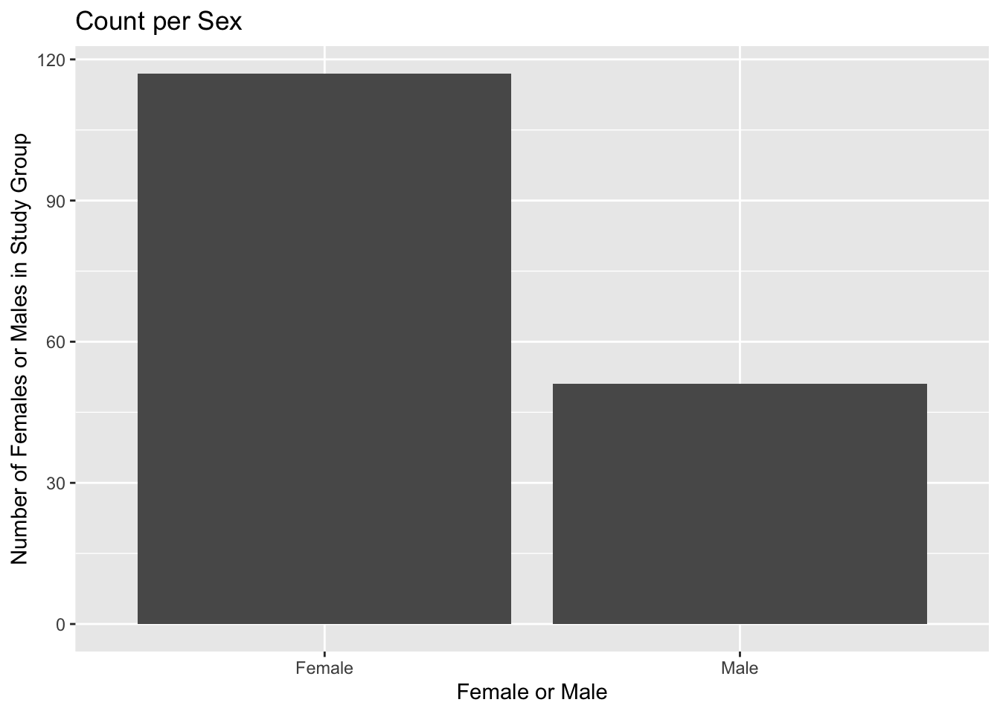
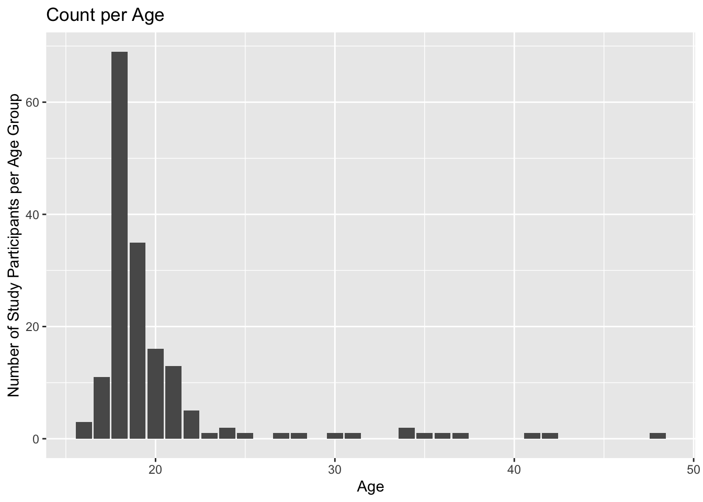

Code
library(tidyverse)
library(here)
hiphop <- read_csv(here("Week 3", "Lab 3", "hiphop.csv"))library(tidyverse)
library(here)
hiphop <- read_csv(here("Week 3", "Lab 3", "hiphop.csv"))#drop_na() takes away way too many observations in my opinion
hiphop_clean <- hiphop |>
mutate(
across(c(word, subj, sex, ethnic), as.factor)
)distinct(hiphop_clean, word) |>
count()# A tibble: 1 × 1
n
<int>
1 64new_hiphop_clean <- hiphop_clean |>
mutate(
white_or_nonwhite =
if_else(ethnic != "white", "non-white", "white"),
white_or_nonwhite =
as.factor(white_or_nonwhite)
)demographics <- new_hiphop_clean |>
distinct(subj, .keep_all = TRUE) |>
select(sex, age, white_or_nonwhite) |>
summary()There’s 33 non-whites while the majority of the study group was white with 155 white participants. The group was composed of 117 females and 51 males. The average age for the group was about 20, which is no surprised considering these are undergraduate students.
new_hiphop_graphable <- new_hiphop_clean |>
distinct(subj, .keep_all = TRUE)
new_hiphop_graphable |>
ggplot(mapping = aes(x = white_or_nonwhite)) +
geom_bar() +
labs(title = "Count per Ethnic Group",
x = "White or Non-White",
y = "Number of Undergrads Per Ethnic Group")
new_hiphop_graphable |>
ggplot(mapping = aes(x = sex)) +
geom_bar() +
labs(title = "Count per Sex", x = "Female or Male",
y = "Number of Females or Males in Study Group")
new_hiphop_graphable |>
ggplot(mapping = aes(x = age)) +
geom_bar() +
labs(title = "Count per Age",
x = "Age",
y = "Number of Study Participants per Age Group")
#a. People below the age of 20
new_hiphop_clean |>
filter(age < 20) |>
group_by(word) |>
summarize(mean = mean(familiarity)) |>
slice(c(which.min(mean), which.max(mean)))# A tibble: 2 × 2
word mean
<fct> <dbl>
1 catch the vapors 1.03
2 off the hook 4.42#b. Non-white women
new_hiphop_clean |>
filter(sex == "Female" & white_or_nonwhite == "non-white") |>
group_by(word) |>
summarize(mean = mean(familiarity)) |>
slice(c(which.min(mean), which.max(mean)))# A tibble: 2 × 2
word mean
<fct> <dbl>
1 break someone out 1
2 feel me 4.19#c. White men above age of 30
new_hiphop_clean |>
filter(sex == "Male" & white_or_nonwhite == "white" & age > 30) |>
group_by(word) |>
summarize(mean = mean(familiarity)) |>
slice(c(which.min(mean), which.max(mean)))# A tibble: 2 × 2
word mean
<fct> <dbl>
1 ay yo trip 1
2 5-0 4.2A. For people below the age of 20, the least familiar word was “catch the vapors”, while the most familiar was “off the hook.
B. For non-white women, the 4 words tied for least familiar were “break someone out”. The most familiar word was “feel me”
C. For white men above the age of 30, there were lots of unfamiliar words, but “ay yo trip” was the most unfamiliar. The most familiar words on average was “5-0”.
new_hiphop_clean |>
distinct(subj, .keep_all = TRUE) |>
filter(
(white_or_nonwhite == "white"),
(age >= 17 & age <= 23),
(city >= 10000 & city <= 60000),
(sex == "Male"),
(bieber >= 5)
) |>
pull(subj)[1] p17
168 Levels: p1 p10 p101 p102 p103 p105 p106 p107 p108 p109 p11 p110 ... p99Even though I believe subject p17 is Justin Bieber, it’s weird his rating for the “Bieber” familiarity question wasn’t 6. Whenever I filtered by Bieber == 6, there were no male subjects.